A 1.1
Constructing noisy training inputs
I mixed my sunflower image with the same noise at three different times. A larger t keeps more of the original image.

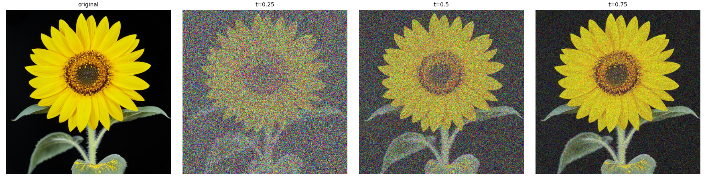
Exploring image generation, editing, visual illusions, and flow matching from scratch.
I explore how noise changes an image, compare denoising methods, and use text to guide image generation and editing.
I mixed my sunflower image with the same noise at three different times. A larger t keeps more of the original image.

The Gaussian baseline softens the sunflower while reducing noise. The saved results below use σ = 8, 4, and 1, respectively.
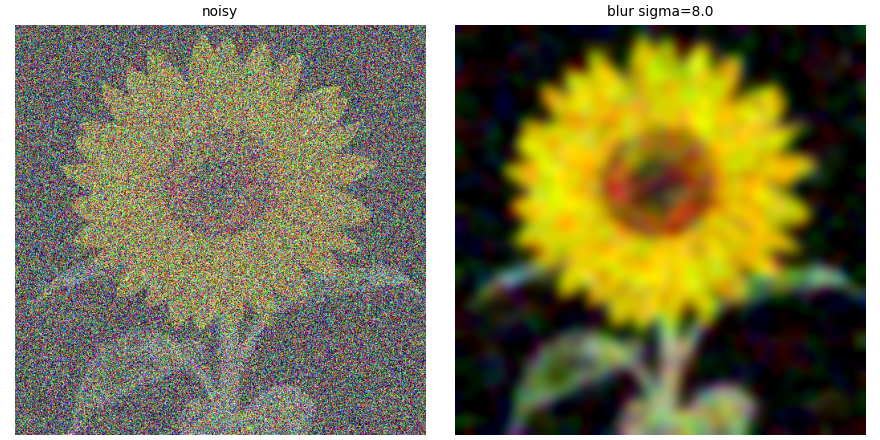
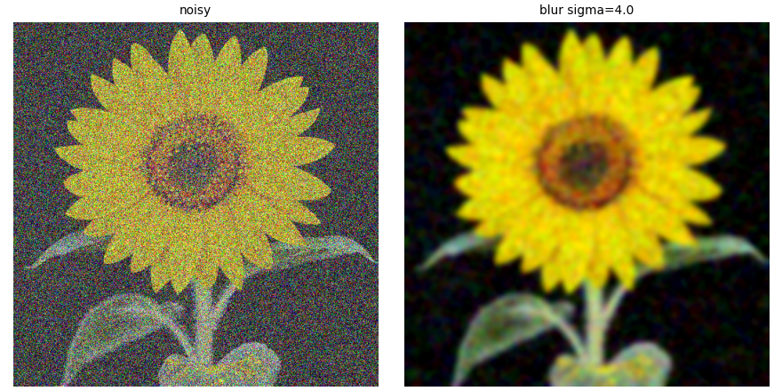
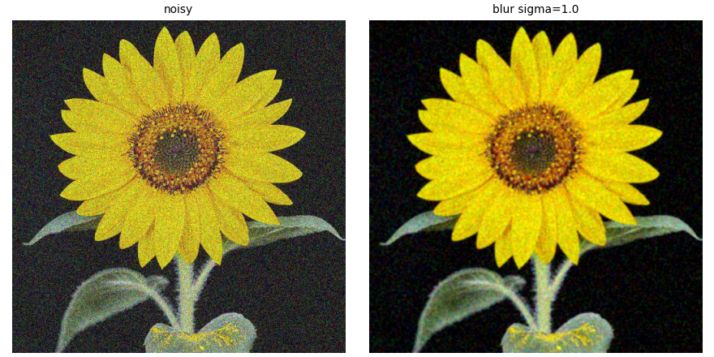
I reconstructed the sunflower with a single predicted update. With “a high quality photo”, this recovered more detail than Gaussian blur.
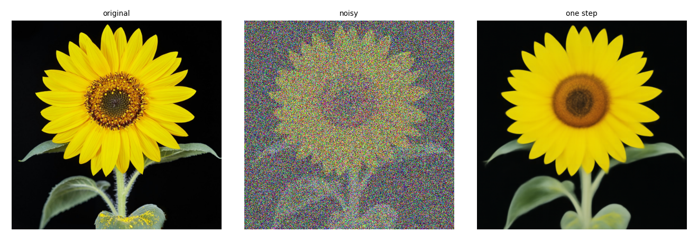
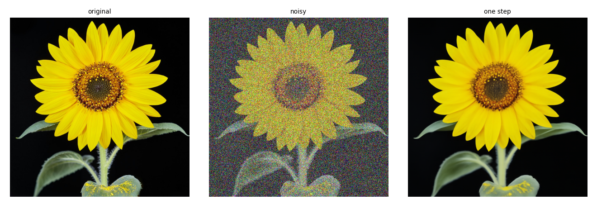
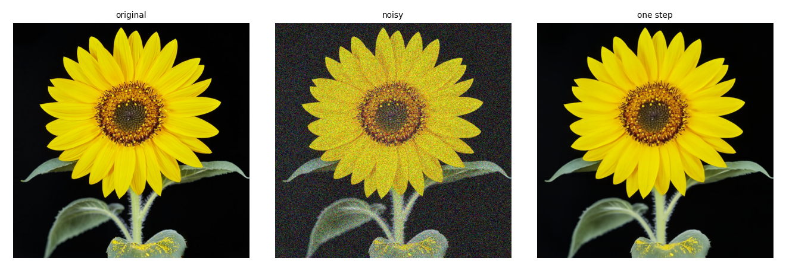
I compared the changes predicted by the model with the changes needed to recover the original image. I then visualized where they differed most.
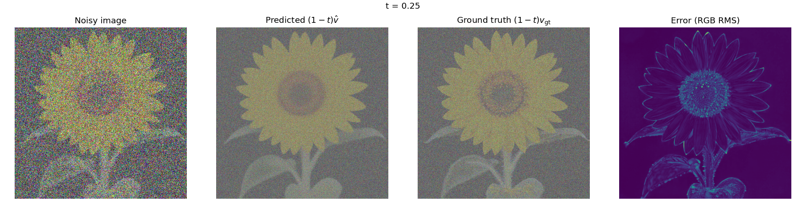
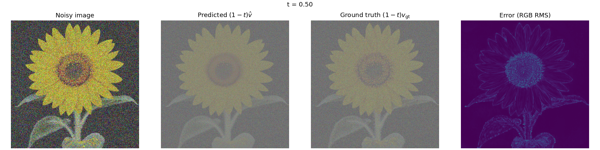
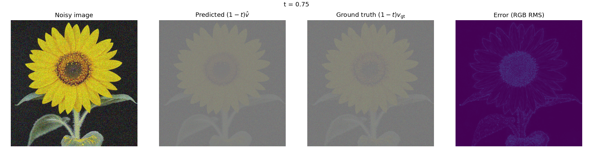
I reconstructed the sunflower through 25 small updates, starting at t = 0.50. I adjusted the final update so the process ended exactly at t = 1.
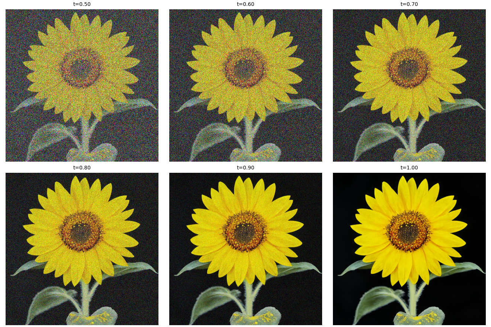
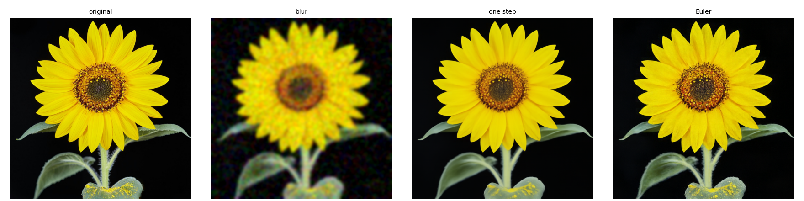
| Method | MSE ↓ | Velocity evaluations |
|---|---|---|
| Gaussian blur | 0.027862 | 0 |
| One step estimate | 0.006792 | 1 |
| Euler denoising | 0.008577 | 25 |
I also generated images from pure noise through 50 updates. The generic prompt mostly produced portraits, with distorted faces or painterly textures in several samples.
Prompt: “a high quality photo”


Classifier free guidance changes the velocity field while keeping the initial noise fixed.
I strengthened the influence of the text prompt by combining predictions made with and without it. The guided results use w = 7.
The five guided samples below reuse exactly the initial noises from Section 1.6. Faces are more complete and photographic, but the results also cluster around clean portrait compositions. In this small set, stronger guidance improves visual quality while reducing variety in the overall style.


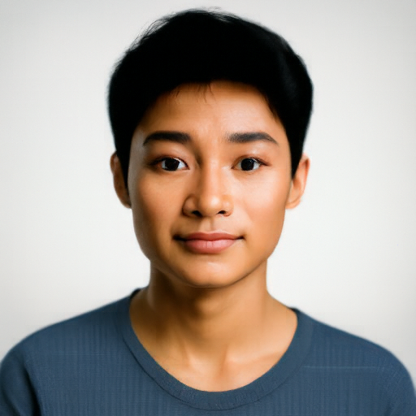
Step size h = 0.02. Seeds 180 to 184 match Section 1.6.
Image to image sampling balances the original picture with the model’s learned image prior and a text prompt.
I add noise to the Campanile and two of my own inputs, then sample with the generic photo prompt. All sweeps use the same seven starting times and seed 180.
Prompt: “a high quality photo”

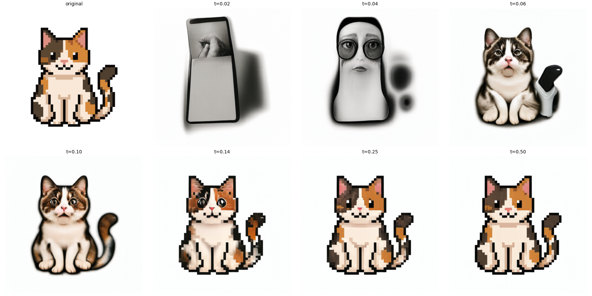
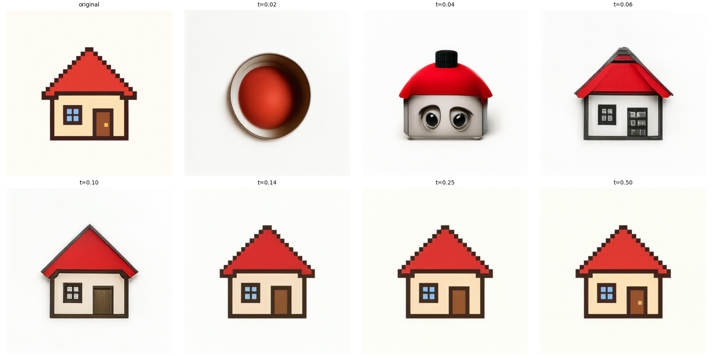
I repeat the same procedure on a downloaded tiger photo and two hand drawn images. The generic prompt can reinterpret a noisy input in unexpected ways. It often favors faces or unrelated objects when little of the source remains.
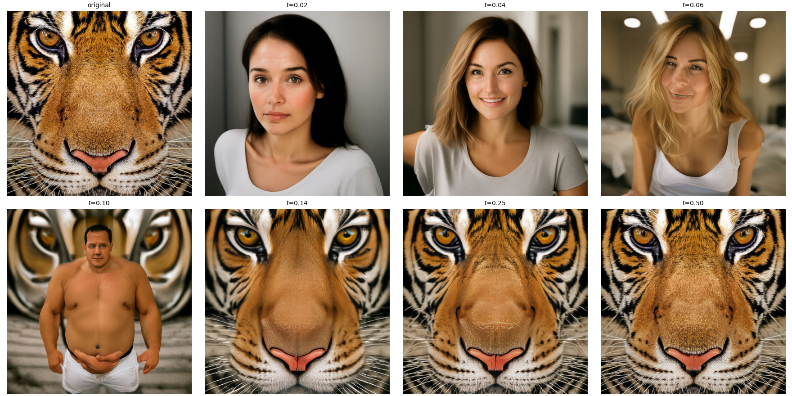
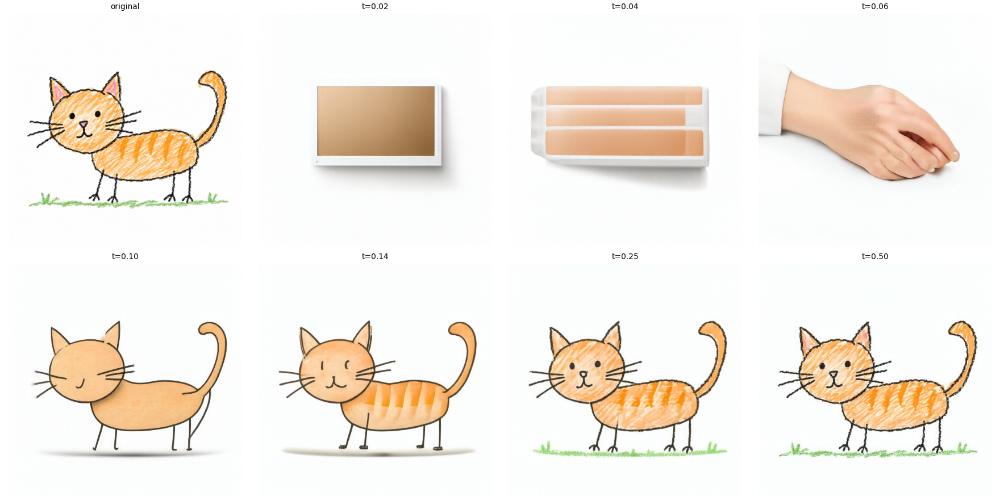
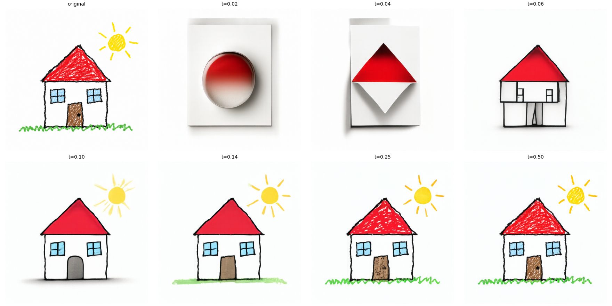
I keep the inputs, noise, and starting times from Section 3.1, but replace the generic prompt with a desired edit. Small t allows the prompt to change the subject and material. Large t favors the source image.
Prompt: “a photograph of a rocket on a launch pad”

Prompt: “a photograph of a majestic tiger in a forest”
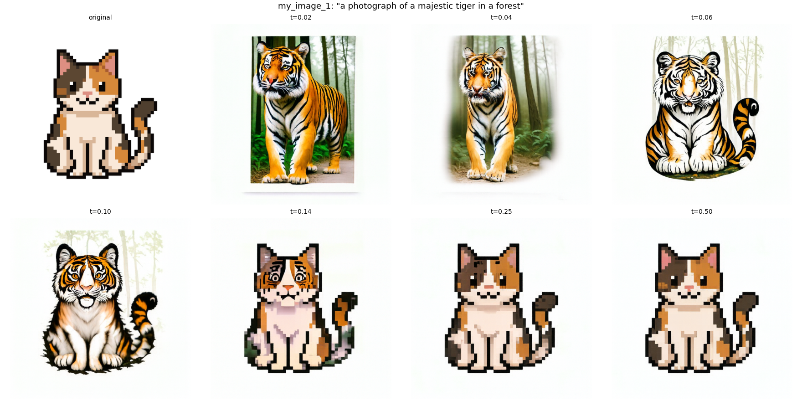
Prompt: “a photograph of a futuristic glass mansion at night”
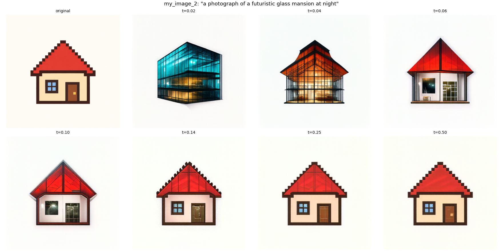
I combine velocity predictions across orientations or frequency bands to create images with more than one interpretation.
I ask one image to satisfy two prompts in two orientations. At every Euler step, I predict a guided velocity for the upright image and another for the 180° rotated image. I rotate the second prediction back before averaging them.


The old man face is clear. The campfire interpretation is less distinct. The village/horse pair also shows a tradeoff between the two subjects.
I combined the overall shape from one prompt with fine details from another. I used a large centered face for the distant view and detailed scenery for the near view.
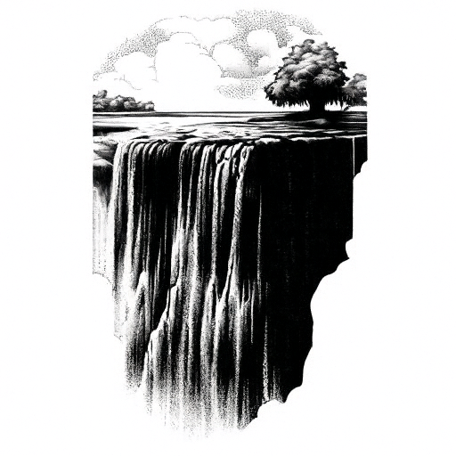
Near · full image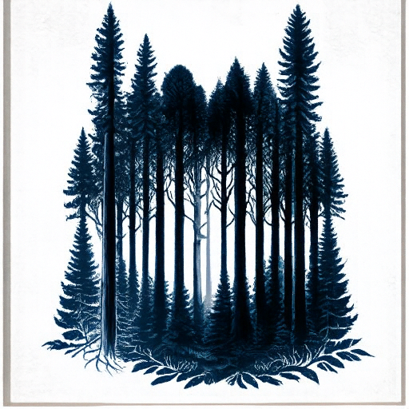
Near · full image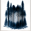
Far · 64 × 64The waterfall is clear, but the intended centered skull remains weak: the dark right edge reads more like a face profile. The forest outline resembles a cat more clearly in the small view, with two ears formed by the trees.
I made images for horizontal reflection and a 90° turn. I combined the predictions from both views so the same image could suggest two different subjects.
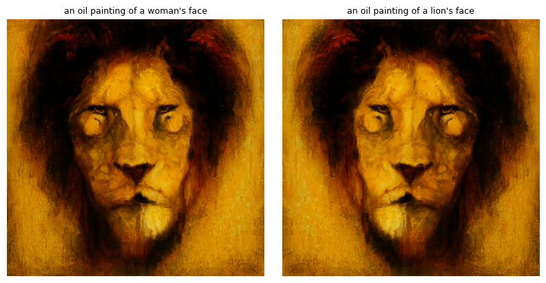
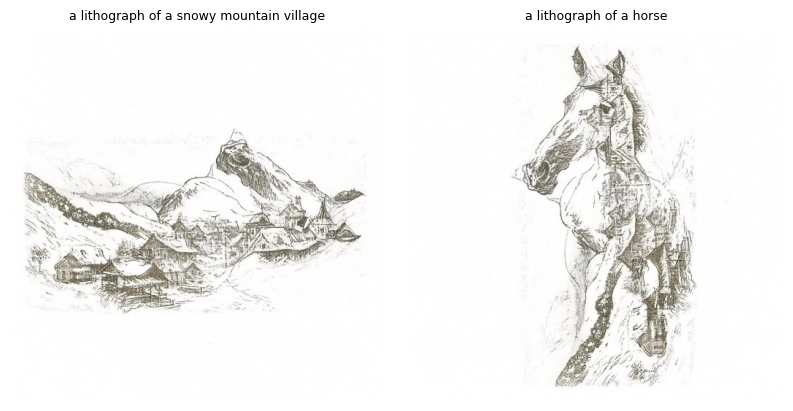
I generate four logo candidates directly from noise with a blue and gold camera aperture prompt. Each candidate uses a different seed, with h = 0.02 and CFG weight w = 7.
Prompt: “a professional minimalist university photography course logo, a large golden camera aperture in the center, six shutter blades forming a circular lens, Berkeley blue and gold color scheme, clean flat vector illustration, no text, no letters”
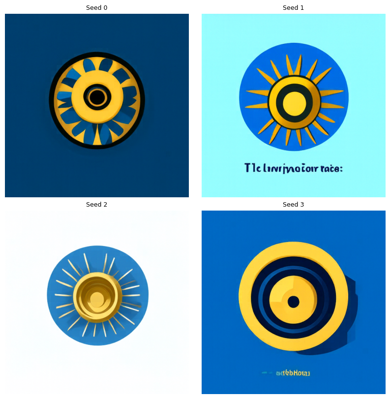
The first candidate is closest to a clean camera emblem. Some others contain unwanted text like marks, and the requested six shutter blades are not consistently followed.
I trained models to remove noise, generate handwritten digits, and follow requested digit labels.
I completed the image processing layers and connected them in the supplied UNet. The denoising model uses 128 hidden channels.
For the one step denoiser, I add noise directly to a digit. I reuse one noise tensor while changing its strength so the change in σ is easy to compare.
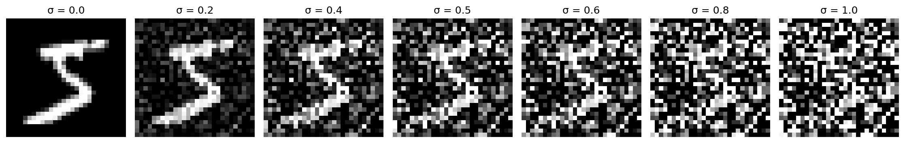
I train a D = 128 UNet for 5 epochs with batch size 256 and Adam at learning rate 10⁻⁴. Every fetched training batch receives fresh Gaussian noise at σ = 0.5. The model minimizes the mean squared error between its prediction and the clean digit.
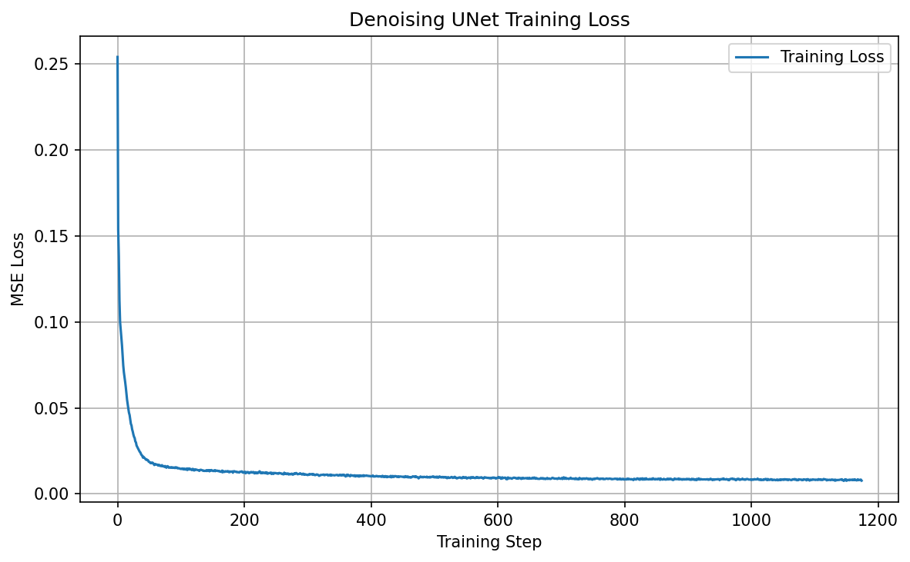
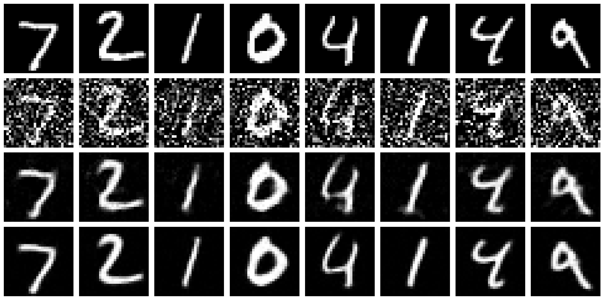
By epoch 1, the model already recovers recognizable strokes from noisy test inputs. At epoch 5 the strokes are cleaner, though some small details are smoothed away.
I keep the same test digit and noise tensor, then change σ beyond the training level of 0.5. The denoiser handles nearby levels reasonably well. At σ = 1.0, the recovered 7 has a more distorted horizontal stroke and extra artifacts.
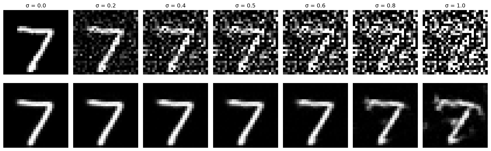
I train a fresh D = 128 UNet for another 5 epochs with the same optimizer and batch size. This time the input is pure Gaussian noise, independent of the target digit. The outputs become similar blurry shapes resembling an average digit instead of separate clean digits.
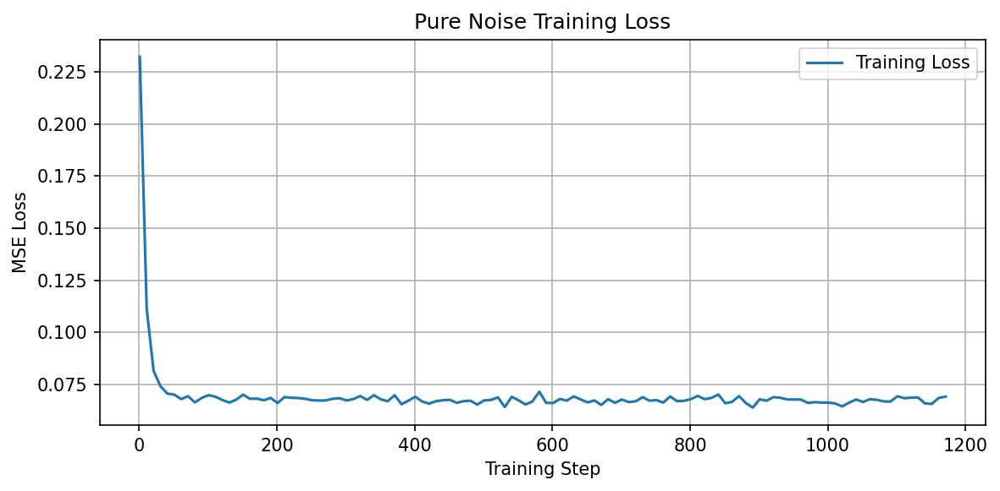
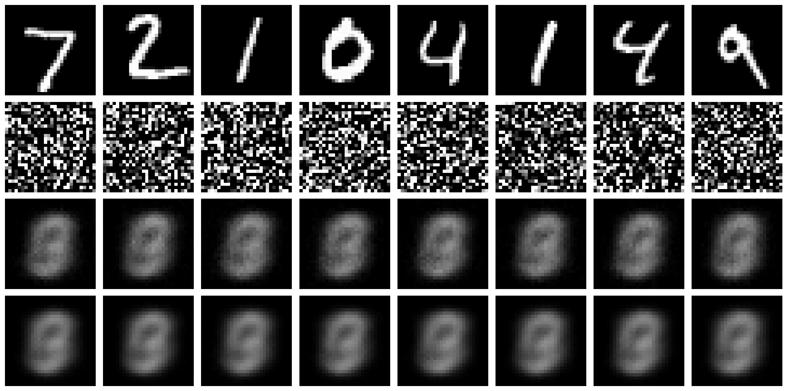
A sequence of small velocity updates can create a digit where a single pure noise prediction could only average.
I included the current time as an extra input so the model could learn how to change the image at different stages.
I train a D = 64 model for 10 epochs with batch size 64. I used Adam with an initial learning rate of 0.01 and gradually reduced it after each epoch. I trained it to predict how each noisy image should move toward a clean digit.
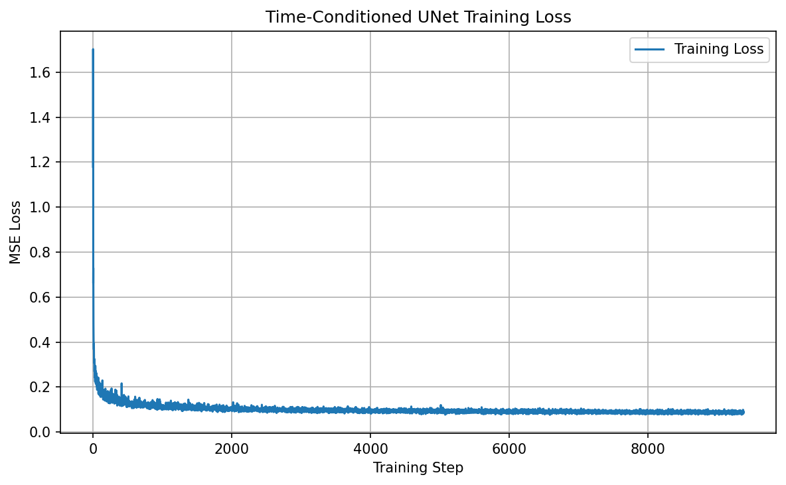
I sample each checkpoint with 300 Euler steps from t = 0 to t = 1. Columns reuse seeds 0 to 9, so each column starts from the same initial noise across checkpoints. Some outputs look like digits early on, but several remain ambiguous even at epoch 10.
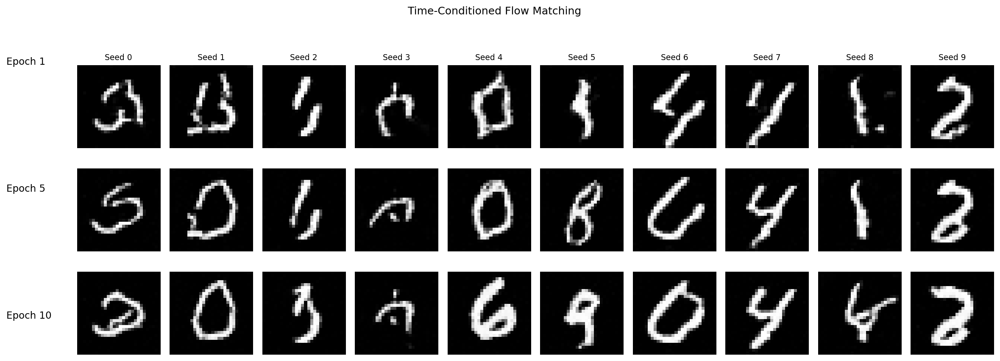
The 300 step sampling grid is finer than the 50 point grid used to draw training times. The improved time only model is compared in the CS280A extras below.
Class labels add control, and classifier free guidance makes that signal stronger during generation.
I added a digit label to control which number the model generates. I hid the label in 10% of training examples so the model could also make predictions without a label.
I train two fresh D = 64 class conditioned models for 10 epochs with batch size 64 and 10% class dropout. One uses Adam with an initial learning rate of 10⁻² and exponential decay. For the other, I remove the scheduler and use a lower constant rate of 10⁻³ to avoid keeping the large initial rate throughout training.
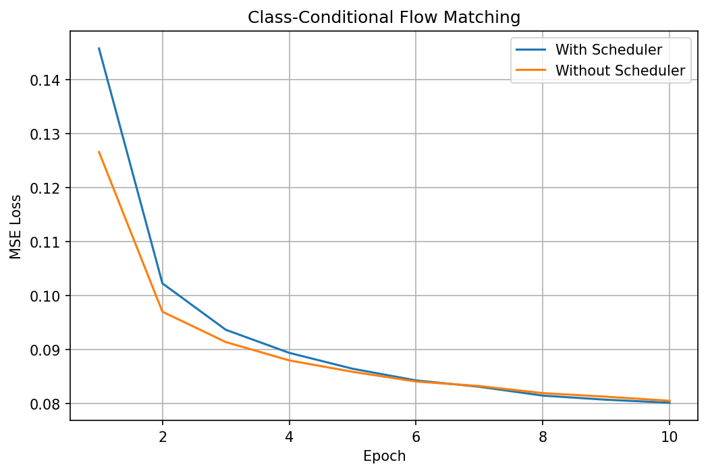
| Run | Learning rate | Epoch 10 loss |
|---|---|---|
| With scheduler | Starts at 0.01 and decreases each epoch | 0.0802 |
| No scheduler | Constant 10⁻³ | 0.0806 |
The two training curves end close together. The lower constant rate compensates for removing decay in this run. The image grids below also show broadly similar digit quality. These are single runs with independently initialized models, so they do not establish exact equivalence.
I generate four instances of each digit at epochs 1, 5, and 10, with 300 Euler steps and guidance scale γ = 5. The class conditioned model follows the requested digit in most columns and produces more legible samples than the time only baseline.
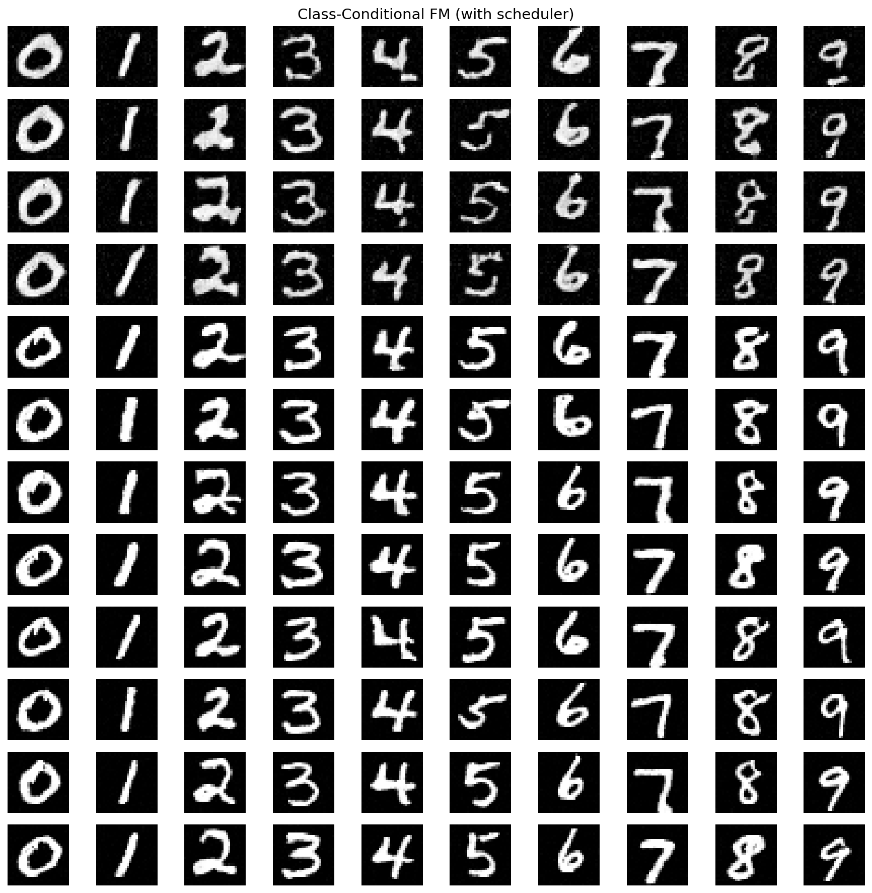
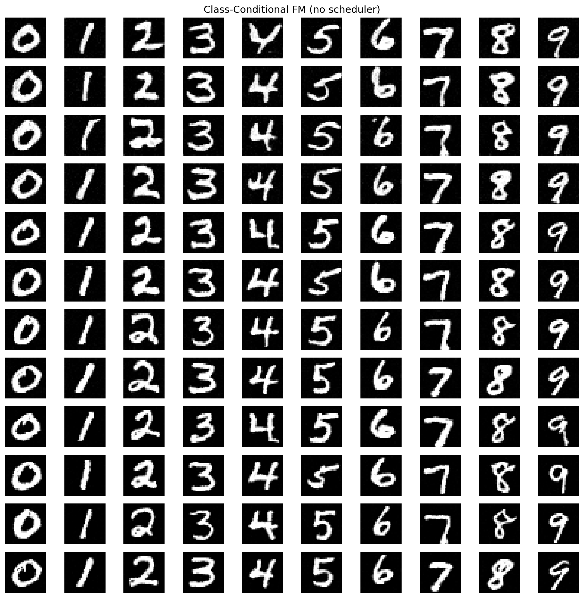
Later checkpoints generally give cleaner, more consistent digit shapes. The constant rate model retains similar visual quality without an epoch scheduler, although individual shapes and stroke widths differ.
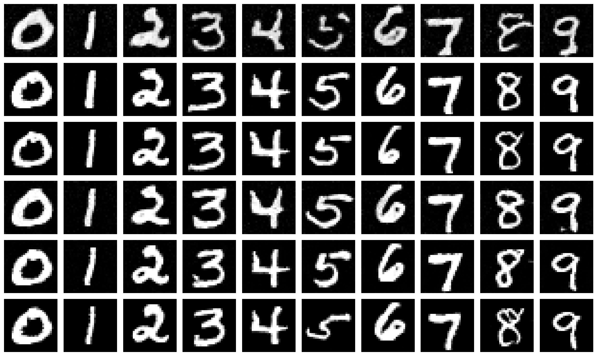
I improve the time conditioned model without adding class information.
For the required CS280A extension, I increase the time only model’s width from D = 64 to D = 128 and train for 30 epochs instead of 10. It still receives no digit labels. I used Adam with an initial learning rate of 0.01 and reduced it gradually over the 30 epochs.
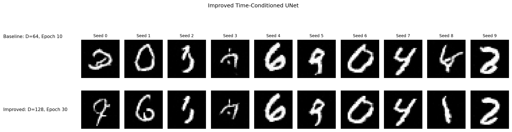
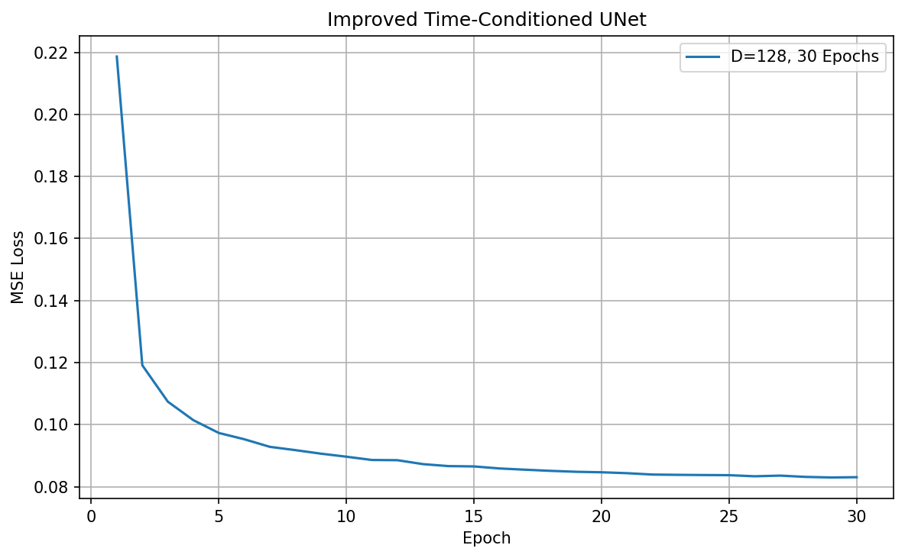
The wider model trained for longer produces more recognizable digits for several fixed seeds, though some outputs remain ambiguous. Different models can map the same starting noise to different digits. Because both width and training duration change, this experiment shows their combined effect rather than isolating either factor.
Both parts connect the same idea: learn or combine directions, then follow them from noise to an image.